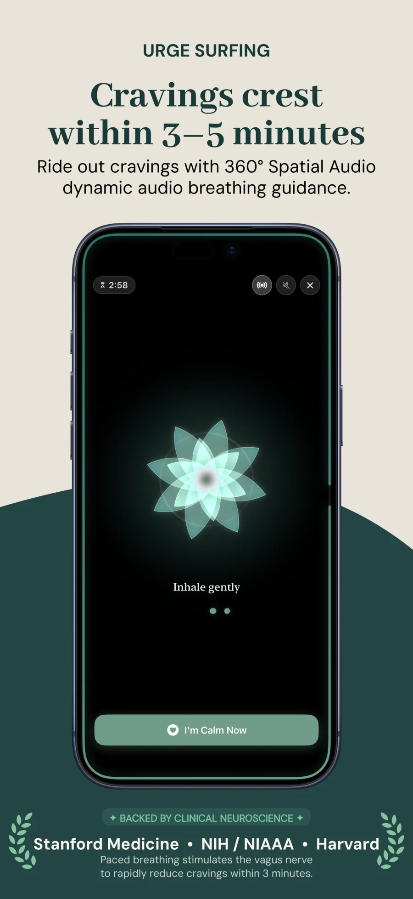

When you decide to stop drinking—whether preparing for a 30-day dry challenge, pursuing mindful moderation, or embarking on long-term sobriety—one practical question immediately arises: Can you drink non-alcoholic beer while quitting alcohol?
For millions of people, non-alcoholic (NA) beer is a transformative harm reduction tool that satisfies the cold, bitter sensory habit of winding down after work. For others, tasting dealcoholized beer triggers an involuntary surge of cravings that threatens their alcohol-free momentum. Whether NA beer supports or sabotages your journey depends on two distinct factors: the pharmacology of 0.5% ABV and the neurobiology of sensory conditioning.
| Beverage Type | ABV | Blood Alcohol (BAC) Impact | Craving Trigger Risk | Best Recovery Window |
|---|---|---|---|---|
| 0.0% Alcohol-Free Beer | 0.00% | 0.000% BAC (Zero physiological trace) | Low to Moderate (Hops aroma mimicry) | Safe from Day 1 of detox |
| 0.5% Non-Alcoholic Beer | Up to 0.5% | 0.000% BAC (Metabolized faster than absorbed) | Moderate (Taste/can texture triggers) | Ideal for 30-day resets & harm reduction |
| Hop Water & Sparkling Botanicals | 0.00% | 0.000% BAC | Low (Zero malt or yeast conditioning) | Early detox (Days 1–14) & social outings |
| Traditional Craft Beer | 5.0%–7.5% | Rapid BAC spike; impairs prefrontal cortex | Extreme (Full relapse event) | None (Break streak / neurotoxic) |
The Pharmacology of 0.5% ABV: Can It Get You Drunk?
In the United States, European Union, and United Kingdom, beverages containing under 0.5% alcohol by volume can legally be labeled "non-alcoholic." In a landmark clinical study conducted by the Institute of Forensic Medicine at the University of Freiburg, 78 subjects consumed 1.5 liters of 0.41% ABV beer within one hour. Blood testing showed BAC remained at 0.000% in virtually all subjects; trace ethanol was eliminated by gastric enzymes faster than it could accumulate in the bloodstream.
In fact, trace alcohol is ubiquitous in everyday foods: ripe bananas contain up to 0.4% ABV from natural fructose fermentation, burger buns contain up to 1.2% ABV from active baker's yeast, and fresh orange juice often reaches 0.5% ABV. You physically cannot drink enough 0.5% NA beer fast enough to become intoxicated.
Mindful Habit Replacement
Ride out evening sensory habit loops with ease
Replace the sensory pouring ritual while tracking true alcohol-free days on your visual calendar. Access 3-minute Craving SOS and body healing milestones—100% private and offline on iPhone.
Get Alcohol Free Tracker on iOS →
The Pavlovian Trap: When Taste Triggers Conditioned Dopamine
While the pharmacology of 0.5% ABV is safe, the sensory neurobiology requires mindfulness. For years, your brain paired specific environmental cues with rapid dopamine releases:
- The auditory cue: The crisp hiss of opening a cold can.
- The olfactory cue: The aroma of malt and floral hops between 5:00 PM and 7:00 PM.
- The social context: Gathering with friends at a pub or dinner party.
When you drink an NA beer, your ventral tegmental area (VTA) anticipates real ethanol. If that sensory ritual satisfies your craving, NA beer acts as a harmless bridge. But if your brain feels teased without the pharmacological sedation of alcohol, it can spark restlessness and mental bargaining. If that occurs, practicing urge surfing techniques or switching to neutral sparkling water is your best defense.
Pros and Cons: Evaluating Your Sobriety Strategy
The Key Benefits
- Deflects social pressure: Holding an NA beer avoids intrusive questions and uncomfortable explanations in social settings.
- Protects sleep architecture: Real alcohol destroys REM cycles, whereas hops in NA beer contain natural xanthohumol and myrcene that promote relaxation without disrupting sleep (as detailed in our alcohol REM sleep guide).
- Saves empty liquid calories: Most NA beers contain just 30–60 calories, compared to 180+ in standard craft beer.
Risks and How to Manage Them
- Sensory crossover: If NA beer leaves you wanting the "real thing," enforce a 14-day pause to allow your taste buds and dopamine receptors to reset.
- Focus on private momentum: Tracking your alcohol-free days with a private offline tracker keeps your progress anchored in personal health rather than rigid, dogmatic streak shaming.
Clinical Guidelines for Safe Integration
If you choose to incorporate non-alcoholic beer into your lifestyle, keep these three rules in mind:
- Check the label: If you take medications like disulfiram (Antabuse) or practice absolute zero abstinence, opt exclusively for 0.0% ABV options.
- Monitor physical cravings: If you find yourself drinking five NA beers in an hour with rising anxiety, your nervous system is seeking dopamine. Switch to herbal tea or hop water.
- Anchor in daily progress: Celebrate replacing ethanol with positive lifestyle habits on your calendar.